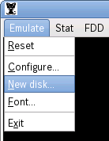
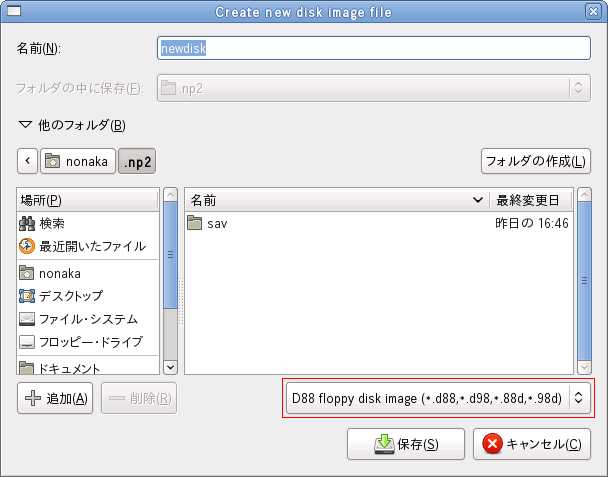
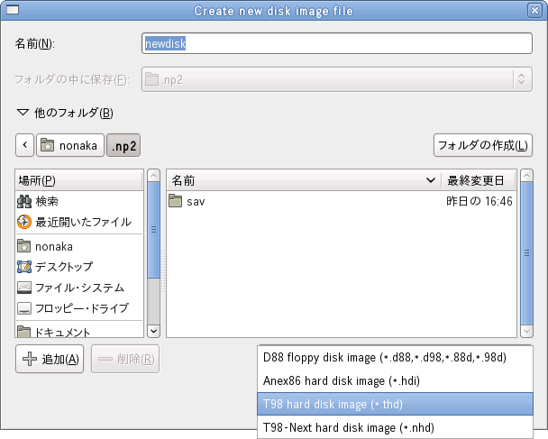
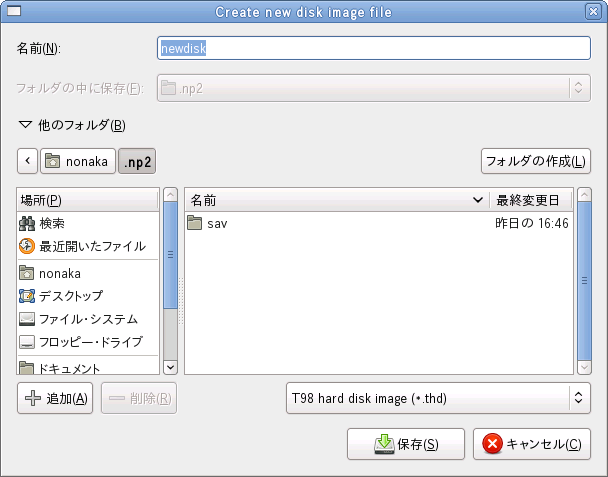
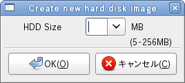
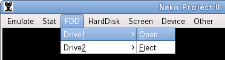
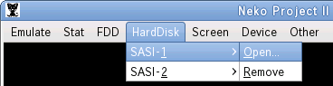
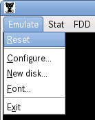

ねこープロジェクトIIでは、フロッピーディスク同様にハードディスクも仮想ディスクファイルよりデータを読み書きを行います。
- MS-DOS をディスクイメージにします。
- [Emulate - NewDisk...] を選択します。
 - 新規ディスクイメージファイル作成ダイアログが表示されるので、「名前(N)」にハードディクスファイル名を入力して、「他のフォルダ(B)」をクリックします。

- 新規ディスクイメージファイルダイアログが拡張されるので、赤枠で囲われたプルダウンメニューをクリックします。
 - 表示されたプルダウンメニューから「T98 hard disk image」をクリックします。
 - 「保存(S)」ボタンをクリックします。
 - 新規ディスクイメージファイル作成ダイアログが消えて、新規ハードディクスイメージダイアログが表示されます。「HDD Size」に作成するハードディルクイメージサイズを入力、もしくはプルダウンメニューから選択します。
 - ハードディスクサイズを指定したら、「OK(O)」ボタンをクリックします。これでハードディスクイメージファイルが作成されました。
- MS-DOS のディスクイメージを [FDD - Drive1 - Open...] で表示されるダイアログで選択します。
 - 作成したハードディスクイメージを [HardDisk - SASI-1 - Open...] で表示されるダイアログで選択します。
 - [Emulate - Reset]を選択して、リセットをかけます。
 - MS-DOS が起動後に表示されるメニューより MS-DOS のマニュアルに従いハードディスクをフォーマットします。
- 注意
- MS-DOS ver.6.20 の場合、インストール時に CPU が 80286 以下と表示され、インストーラは利用できません。この場合には MS-DOS システム転送済みディスクに FORMAT.EXE, HDFORMAT.EXE をコピーし、プロンプトで FORMAT を実行してハードディスクを初期化して下さい。